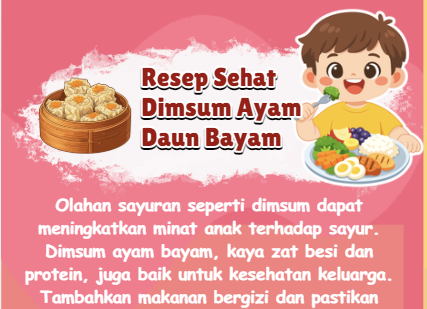
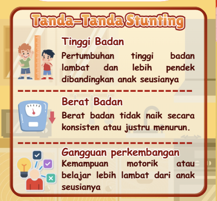
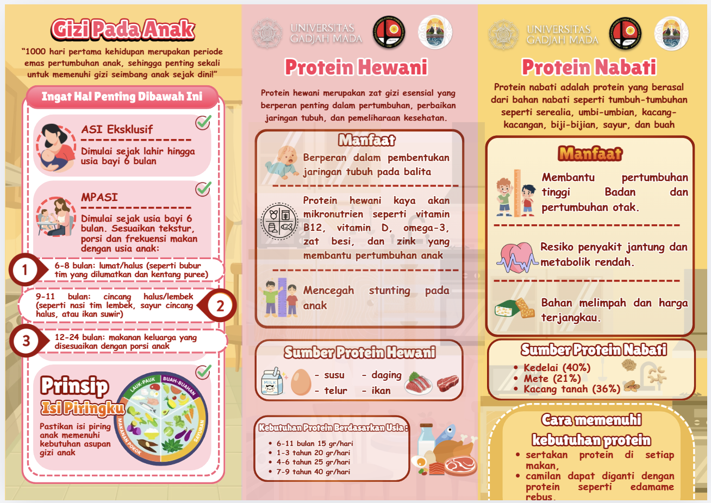
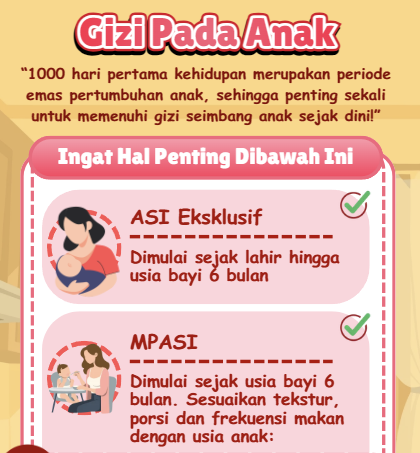

menu_book
Leaflet
Panduan Gizi Seimbang pada Anak
Leaflet ini berisi informasi mengenai konsep gizi seimbang pada anak dan prinsip Isi Piringku. Selain itu, dijelaskan pula pentingnya konsumsi makanan bergizi untuk mendukung tumbuh kembang anak secara sehat dan optimal sekaligus sebagai upaya pencegahan stunting. Leaflet ini juga membahas pentingnya asupan protein hewani dan nabati, serta dilengkapi dengan resep dimsum ayam daun bayam sebagai solusi bagi anak yang sulit makan sayur.

zoom_in
Dokumentasi Kegiatan



